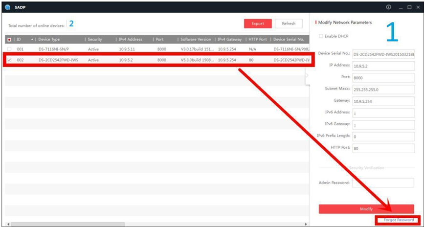
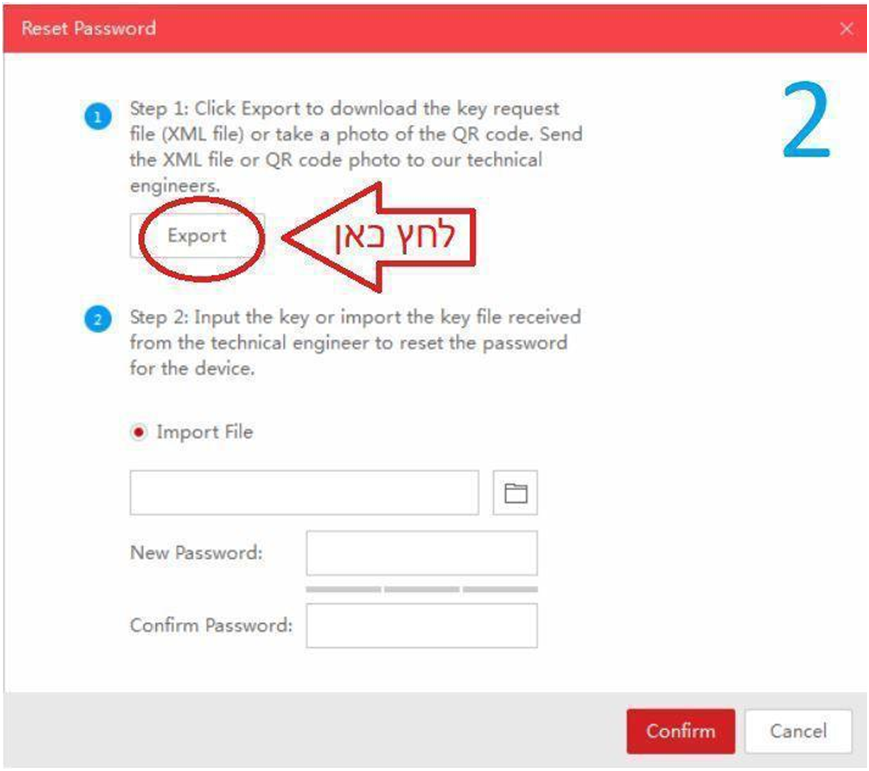
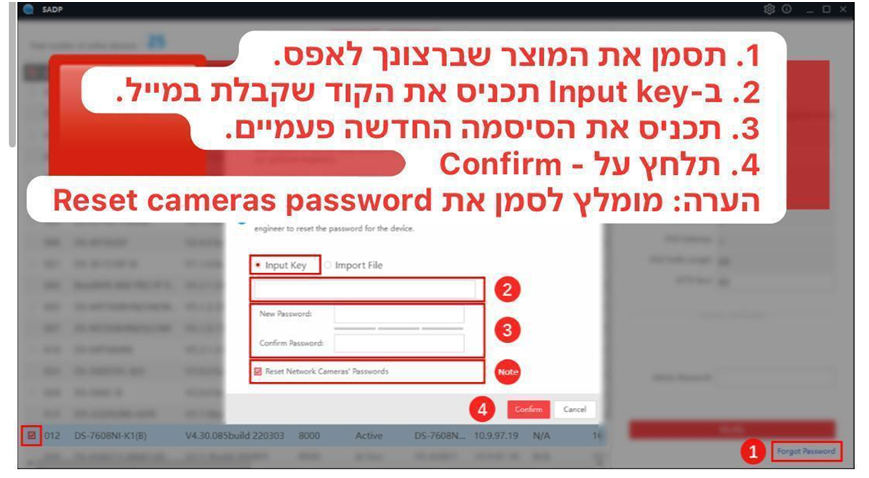

איפוס סיסמה למערכות: HiLook / Dripstone
כדי לאפס את הסיסמה, אתה צריך מחשב שמחובר לרשת יחד עם המוצר שברצונך לאפס.
במחשב, עליך להתקין את תוכנת הניהול SADP Tools.
- פתח את ה-SADP ותסמן את המכשיר הנדרש.
- בפינה הימנית התחתונה, לחץ על "שכחתי סיסמה" (Forgot Password)
- ייפתח חלון – לחץ בו על Export
- שמור את הקובץ בכל תיקיה נוחה במחשב שלך.
- שלח את הקובץ לכתובת: pass@telran1986.co.il
- לאחר מכן תקבל מאיתנו קוד Input Key בדוא"ל.
- פתח שוב את SADP, סמן את המערכת ועבור ל"שכחתי סיסמה"
- הזן את ה-Input Key ששלחנו לך.
- הכנס סיסמה חדשה פעמיים (לפחות 8 תווים, כולל מספרים ואותיות).
- לחץ על הכפתור האדום “Confirm”
❗ לאחר שייצאת את הקובץ, אין לכבות את המכשיר או לנתקו מהחשמל/רשת ❗



⏰ ניתן לאפס סיסמה בימים א'-ה' בין השעות 8:00 עד 16:00. התהליך עשוי לקחת כשעה ❗